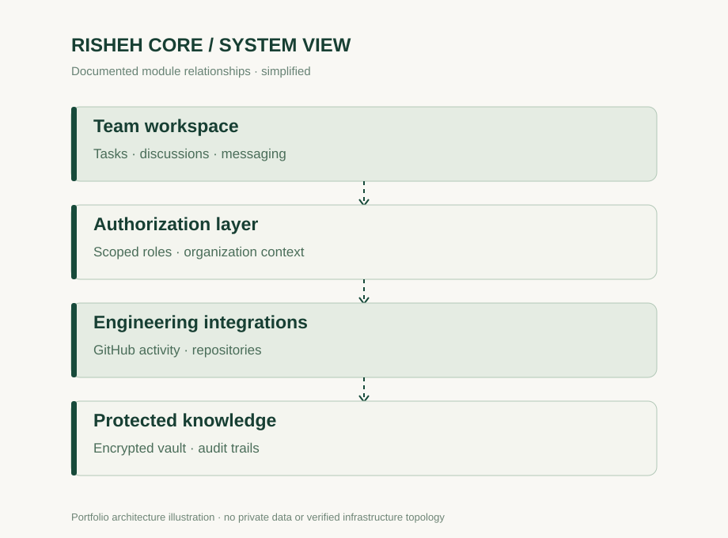

Risheh
Core
Connecting the work behind the work.
Engineering operations · GitHub integration · Authorization · CollaborationA real operational problem.
When tasks, code reviews, conversations and institutional knowledge live in separate systems, coordination becomes fragmented. The platform aims to give teams a unified operating environment while respecting access controls.
From ambiguity to structure.
- Unified team workspace with tasks, discussions and messaging
- GitHub-connected engineering activity and repository context
- Scoped collaboration and organization-aware access rules
- Confidential documents vault with explicit access and auditing
Architecture as a product decision.
Application modules integrating workspace workflows, relational persistence, GitHub activity and access-controlled information management.
How the pieces connect.
An explanatory architecture schematic, not a screenshot or verified production infrastructure map.

Where I contributed.
Founder-led product definition, architecture direction, requirement prioritization and release review.
Evidence over inflated metrics.
Project milestones include Workspace v3, engineering room workflows, repository activity sync and encrypted document storage.
Confidentiality: Internal documents, system credentials and organization-specific records are intentionally excluded from public presentation.
Quantitative business outcomes have not been independently verified and are intentionally not claimed.